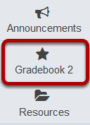
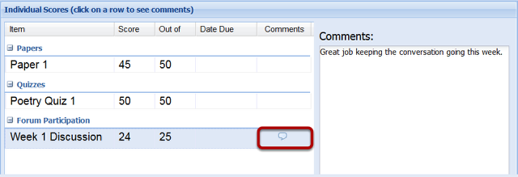

How do I view instructor comments in my gradebook?
Instructors can include comments related to individual graded items in the Gradebook.
Go to the Gradebook.

Select Gradebook 2 from the tool menu in your site.
Click on the text bubble next to your score.

If your instructor has left you a comment, there will be a text bubble next to the score they have commented on. Clicking the text bubble will open a small Comments window to the right of the Individual Scores panel.